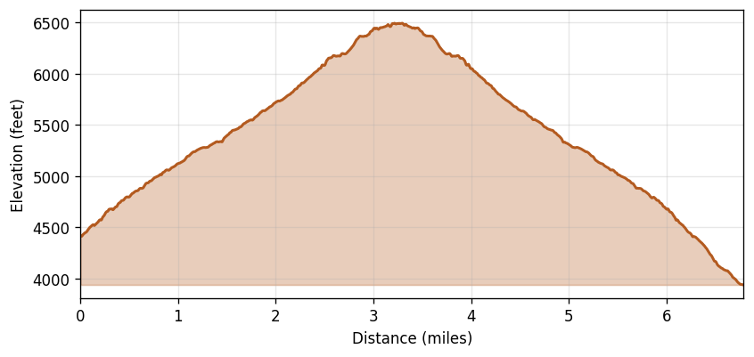

Iron Peak
Region: Alpine Lakes Wilderness, Okanogan-Wenatchee NF, WA
Date: 2021-09-04 (14:59–19:30 PDT)
Distance: 6.79 miles
Gain: 4,062 feet
Duration: 4h 31m (3h 11m moving, 1h 20m stopped)
Avg speed: 2.13 mph moving / 1.50 mph overall
Weather: Overcast at start, partly cloudy by the descent. Temps 61–70°F, W winds 6–8 mph, no precipitation.
Route
Elevation Profile
